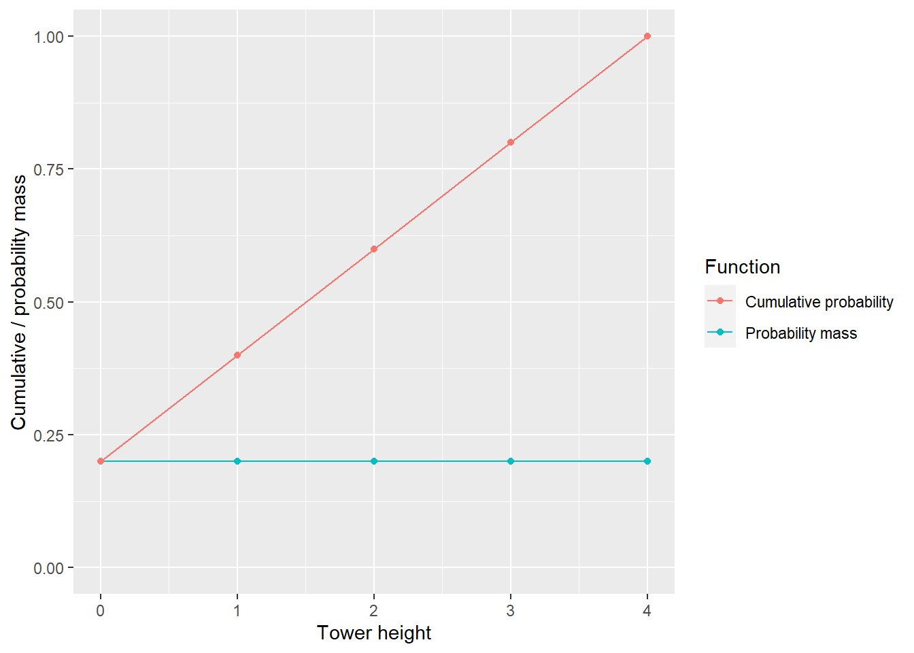
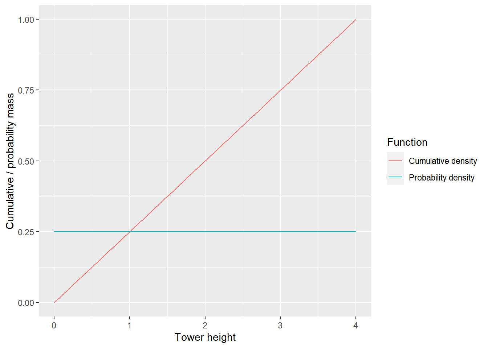
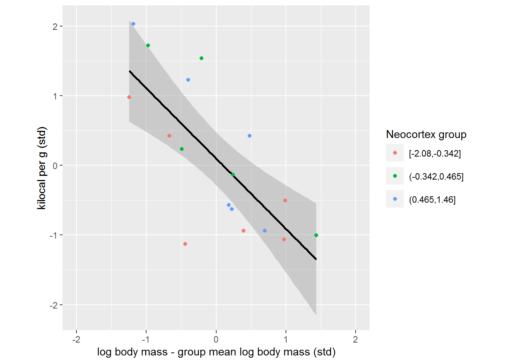
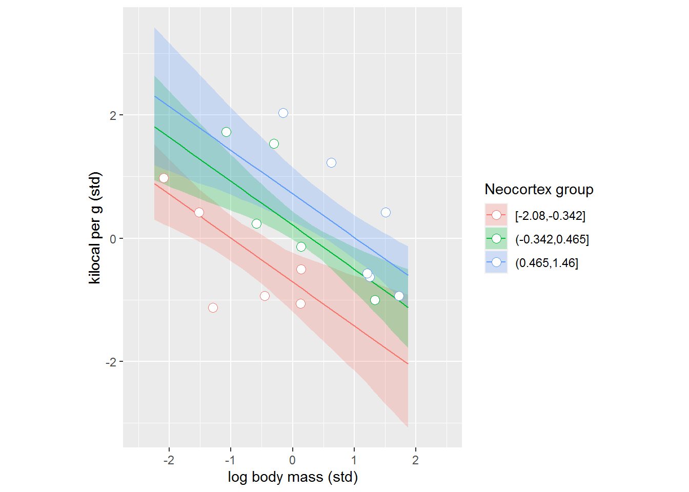

15 Probability mass versus probability density
When you first encounter continuous distribution, one of the initially confusing things is the concept of probability density that looks like probability of an outcome (but is not) and the fact that it can be any positive value, not just within 0 and 1. To make understanding easier, let us start with a simple concept of probability mass. Here, each outcome gets a probability that must be between 0 and 1 and probabilities for all outcomes must add up to 1 (makes these values probability rather than just plausibility). Imagine the simplest case when all events are equally likely. For example, I have four cubes and you must guess the height of the tower that I have built. There are five possible towers (zero-height tower is also a tower, just not a particularly good one) and without any prior knowledge you can assume that each tower height is equally likely: 1/N, where N=5, so 1/5 = 0.2 (or 20%, if you like percentages more).
There is another way of thinking about this via cumulative mass function. It tells a cumulative (total) probability of observing a height of a tower that is equal or smaller than a chosen value.
 As you can see, a cumulative probability of observing a tower of zero height (or lower) is 0.2. We if consider height of 1, it bumps cumulative probability to 0.4 (Pr(height=0) + Pr(height=1) = 0.2 + 0.2 = 0.4). Going up to 2 makes it 0.6, to 3 — 0.8 and, finally, the cumulative probability of me building a tower of height of 4 or lower is 1 (100%!). The latter includes all possible tower heights, so the probability you observe one of them is 100%. Note that for each height the probability mass tells you by how much the cumulative probability will increase. This probability mass as an change of cumulative probability will become important later.
Note that cumulative probability can only grow and must be between 0 and 1, as all probabilities cannot be negative and must sum up to 1 (otherwise, we call them plausibilities). Below is the same plot but now it includes impossible heights of -1 and 5. Their probabilities are 0, so the cumulative probability does not grow. 
But what if I build a “tower” out of very fine sand? For simplicity, let us assume that its height is also within a 0 to 4 (cubes height) range. But now, there are way more heights that my tower can have. If my sand is super fine, as is individual grains are infinitesimally small, there are infinite numbers of possible heights. Knowing that they are all equally likely sort of helps but you cannot compute a probability for each individual height: 1/N, where N=∞ mean 1/∞ ≈ 0. This is the annoying thing about infinities, they make computing things really hard32. So, what do you do if you cannot compute a probability for an individual event/value (height)? You can still compute the cumulative probability of a tower being smaller or equal to a particular height! This is the cumulative function that you saw earlier, but the steps are now so fine that you cannot talk about sums but only about integrals. This is why it is now called the cumulative density function (CDF). 
Note that it looks fairly similar to the previous plot with cumulative probability for discrete events. It still grows from 0 to 1 but the steps are much finer. Yet we can still tell the probability of observing a tower of a height that is equal to or less than this. We start of at zero, because you cannot observe towers of negative height, so all tower heights from negative infinity up to zero have a total cumulative probability of 033. If we pick the height of 4, then the cumulative probability of observing a tower that is equal-or-less is 1 because all must be that or smaller (that is how we defined it, there cannot be a tower higher than 4!). If we pick the middle of the interval (height = 2), the cumulative probability of observing a tower that is equal-or-smaller is 0.5. This is because we are using a uniform distribution, so half splitting height in half also gives us 50% chance. As you can see, cumulative probability density behaves the same way as the cumulative probability mass in the example above. Both are fairly straightforward, as long as you appreciate that they are about all outcomes up to the point of interest, not just a single event.
What about the probability density function (PDF)? Recall that the probability mass function tells you how much the cumulative probability changes when you “move to the right” to include the next outcome. Same thing here but for continuous cases a function that describes the rate of change is called a derivative. The formula for our continuous uniform distribution is \[CDF = \frac{1}{4} \cdot height\] (note that we are currently only thinking about a range of 0 to 4 to make things simpler). You can check that this is indeed the case by plugging in different heights. Its derivative with respect to height is \[\frac{\delta CDF}{\delta height} = \frac{1}{4}\]
Thus, we can now plot both CDF and PDF.  You can reverse the logic and say that the cumulative density function is an integral of PDF, i.e., area under the curve up to each point. So, the total area under PDF (blue line) should end up being 1 (final value of CDF). This is easy to check for a rectangular like that, just multiply its width (height range of 4) by its height (probability density value of 0.25) and get that 1. Note that if you restrict your height=2 then CDF values is 0.5 and the area under blue line (PDF) is also 0.5 (compute!).
In the example above, probability density is constant at 0.25 and that makes it look “normal,” at least not surprising. But what if we restrict my tower-building, so I cannot build anything taller than 0.5 cubes (or meters, units are of little relevance here). Now, the CDF formula is (check!): \[CDF = 2 \cdot height\]
and for PDF: \[\frac{\delta CDF}{\delta height} = 2\]
Our constant PDF value is 2! Way above one, how come? Think about the slope and think about the area of rectangle: if its 0.5 units wide it must be 2 units tall to make are equal to 1. The point of this is probability density is not a probability and that you should not care about absolute values of probability density, only about relative values. If you feel that “adding up” values larger than 1 should not give you 1 at the end, yes, it is very counter-intuitive. Integrals, as other things that have to do with infinitely small or large numbers, are counter-intuitive. Thus, ignore the units, ignore the absolute values, just keep in mind that whenever it is higher, the more probable that specific value is. (But, again, there is no way to compute a meaningful probability for a single value).